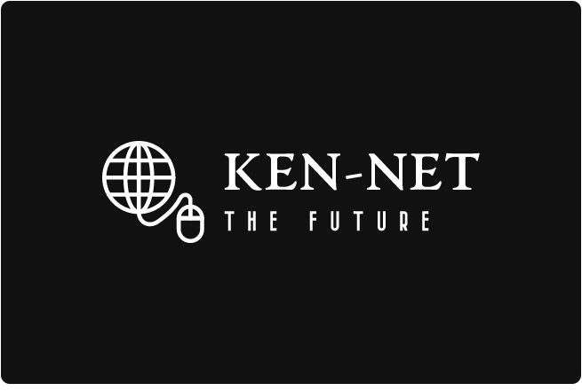

KEN-NET :: GAGNONS DU TEMPS!
Avec ken-net framework, creez plus facilement et plus rapidement vos projets webs sans plus vous fatiguer a reinventer la roue.
Avec ken-net framework, creez plus facilement et plus rapidement vos projets webs sans plus vous fatiguer a reinventer la roue.